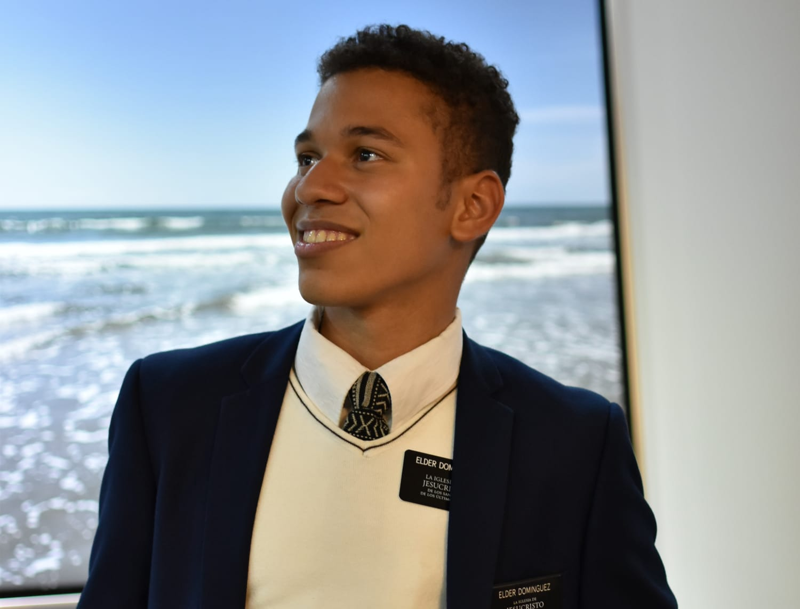

Rubén Enrique Domínguez Gudiño
Desde Joven se ha distinguido por su disciplina, puntualidad, responsabilidad y constancia. Desde los 6 años se puso metas su primer logro fue aprender a tocar el piano y participar en diferentes recitales. Se graduó de premedia con puesto de Honor en el 2017, Culminó su Bachiller en ciencia en el 2020. Ha participado activamente como líder de jóvenes en su congregación religiosa, donde fortaleció valores de la fe, servicio y compromiso comunitario. Asimismo, sirvió durante dos años como misionero en Guatemala, periodo en el que atendió bajo su cuidado a 152 compañeros, desempeñándose como secretario financiero, ejecutivo, vivienda, de migración, ejecutando y delegando.
En el 2017 realizó un curso de emprendimiento y gerencia laboral en la fundación Ford. Posteriormente asumió otras responsabilidades como jefe de bodega en la empresa Sportline, donde trabajó por algunos meses. Con el tiempo descubrió su pasión por la tecnología, la programación y el marketing digital; esto lo llevó en el 2024 a ingresar a la Universidad Tecnológica de Panamá, donde obtuvo un certificado en Oracle. Actualmente cursa su segundo año en la carrera de Licenciatura Desarrollo y Gestión de Software, este mismo año culminó un diplomado en Marketing Digital en agosto 2025.
Entre sus habilidades destacan: auditoría de finanzas, manejo de equipo de oficina, así mismo manejo de Microsoft Office (Excel, Word, PowerPoint, Outlook) y gestión de redes sociales para la creación de publicaciones. Otras habilidades son el trabajo en equipo y liderazgo.
Rubén Domínguez tiene grandes metas para su futuro entre ellas obtener una maestría y un posgrado en Auditoría de Sistemas y Evaluación de Control Informático. Aspira a ser recordado como un profesional exitoso, un buen padre, esposo, abuelo y hermano, logrando así una vida en la que se unan perfectamente lo académico, lo humano y lo espiritual.
Si deseas comunicarte:
Enviar un Mensaje